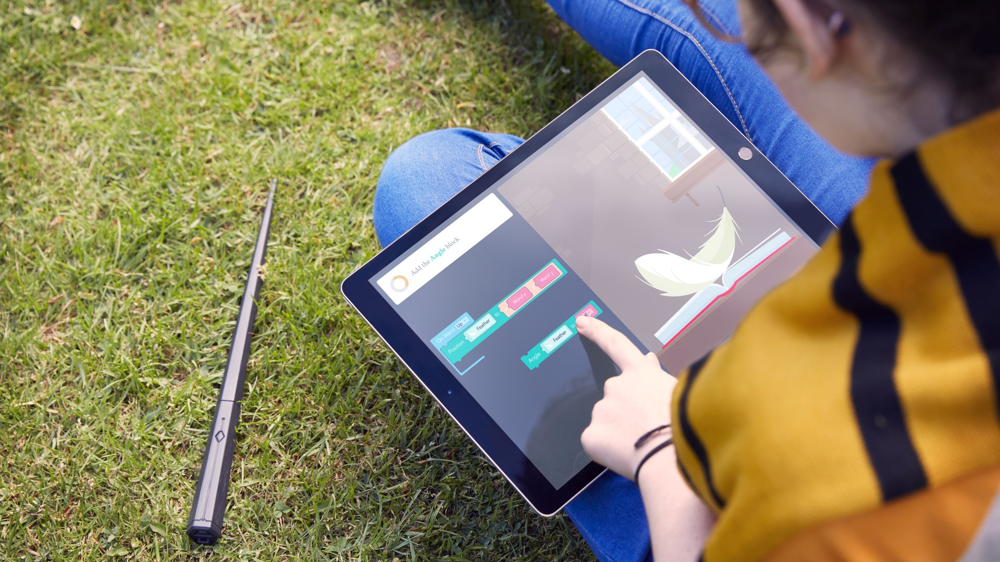
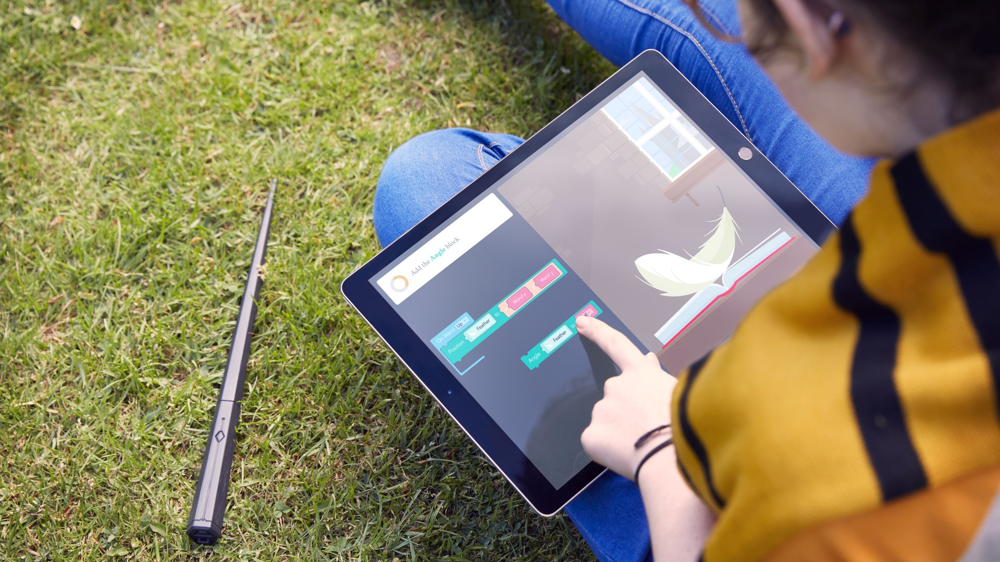

Learn to program with the help of magic.
Kano announces a set with the Harry Potter theme
The Kano company produces sets for self-building computers, based on the Raspberry Pi system and promoting programming learning from 2012. In their offer, we can find devices that, thanks to the combination of learning and playing, can provide not only children but also adults with a lot of entertainment. Of course, we're talking about such sets as the Pixel Kit or the Motion Sensor Kit.
On July 24, Kano announced another set that will introduce the user to the world of programming by using spells. The Kano Coding Kit included with the Harry Potter wand, was available for pre-sale on the Kano.me website for $ 99.99, and went officialy for sale on October 1. The producer writes on his blog that the set is able to work also with the majority of mobile devices, operating on Android, iOS systems also as well as on PCs and Macs.
The first and at the same time the main step in the work with the set is the construction of the wand. Inside of it there are elements such as a gyroscope, accelerometer and magnetometer, which help to track the speed and movement of the wand in three-dimensional space. These sensors are also designed to recognize casting spells that you can use to test your applications. You will be able to cast spells like Wingardium Leviosa or Incendio. All created programs can be made shared by users on the Kano World website.
The programming scheme itself in Kano products is based on putting blocks with functions in the right order from which a running program is later created. In addition, to add variety to learning, you can create simple games such as Flappy Bird using a motion sensor, or display colorful pictures on a LED board, on which you can move the robot that you have just created.
Kano especially draws attention to the fact that coding is to bring above all joy and fun, and not to be mindless copying the next lines of code from StackOverflow. It is therefore an ideal solution for parents who want to introduce their children to the world of programming and also have fun in the process. So if you are still waiting for a letter from Hogwarts, then this set will certainly make the waiting time easier.
 
